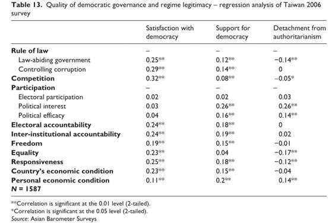

收录于合集
文献来源：
Yu-tzung Chang, Yun-han Chu and Min-hua Huang, “Procedural quality only? Taiwanese democracy reconsidered,” International Political Science Review ,Vol.32 (November,2011), pp.598-619.
面对上世纪六、七十年代美国国内兴起的大众政治参与浪潮导致的“民主的危机”，亨廷顿（Samuel Huntington）曾指出，作为一种政府（政体）形式的民主，首先要解决的是自身的统治能力问题。自2000年以降，第三波民主化余波席卷而来的“颜色革命”和“阿拉伯之春”使得对“自由民主”的过度迷信导向无效治理乃至失败国家，呈现政治衰朽的乱局。为此，中国人民大学政治学系杨光斌教授近年来提出了“可治理的民主”（Governable Democracy）理论，本质上是对现代国家治理和民主转型学的反思。
追溯历史，自上世纪80年代以来，对民主转型、民主巩固和对民主质量的探讨成为政体变迁和政治发展研究领域中的重点。奥唐奈（Guillermo O’Donnell）、林茨（Juan Linz）、普泽沃斯基（Adam Przeworski）等人从发展中国家民主化的现状出发，在对民主巩固进行分析时大量着墨于精英在威权政体及其民主制反对者中的选择和战略互动。事实上，一国的民主政体不仅与它之前存在的威权政体相竞争，同时受制于它本身的质量也受制于周边国家的影响，民主巩固和民主质量之间的关系是复杂的。
经验研究表明现实和理想之间的鸿沟越拉越大，民主选举的政府腐败、能力低下以及反应迟钝等等弊端都令人都担忧：第三波民主化可能会长期陷入低质量的停滞状态，并消弭所有试图深化改革的可能。因此，在第三波民主化的大部分国家中，如果民主的质量得不到提高，民主政体不可能拥有广泛持久的合法性。因此，比瑟姆（David Beetham）、拉里·戴蒙德（Larry Diamond）、莱昂纳多·莫里诺（Leonardo Morlino）等人在对民主的质量进行评估的同时尝试找出提升民主质量的方法。当下评估民主质量的方式主要有两种，分别是制度供给角度和制度需求角度。从制度供给的角度来看，领导人和制度是型塑民主的关键因素。从制度需求的角度来看，对民主质量的评估取决于民众对民主政体的期待。对自由民主期待越高的民众在现实中对民主制度运行的评价越低。但是在民众强烈的要求下，流行的自由民主价值观的承诺可能迫使政治家和执政党推行善治，这反过来又加强了民主制度的合法性。作为华人世界最早探索实行西方自由民主制度的中国台湾地区，从上世纪80年代末期开始民主化至今，其民主的质量究竟如何呢？

2011年，台湾大学政治学系张佑宗教授、朱云汉教授以及黄旻华教授三位作者在《国际政治科学评论》发表论文《唯程序质量导向？台湾民主化的再探》，旨在阐述两个议题——首先是采用意大利政治科学家莫里诺创制的测量方法来评估台湾年轻的民主质量，第二是运用亚洲民主动态调查（Asian Barometer Survey）的数据评估台湾民主化到2011年之间台湾公众对民主政体支持的感知。在本文中，作者从程序、内容、结果3个方面以及与之相关的法治、选举问责、制度内问责、政治参与、政治竞争、自由、平等以及回应性等8个维度加以评估。
作者首先回顾了台湾民主化的历史，指出自2000年政党轮替以来，台湾民主化面临着多方面问题，特别是从2000-2008年民进党执政8年间，岛内年轻的民主制度陷入了一系列治理危机，例如极具争议的选举结果，无休止的政党争斗，经常性的政治冲突，国家认同的紊乱，“最高”领导层的腐败猖獗，大量资本外流以及经济增长放缓，前景低迷等。
因此，作者指出，虽然按照Polity IV的评价体系，台湾地区已经达到了西方国家民主制度长期生存的标准，但是现实并非如此。尽管政治经济学家熊彼特（Joseph Schumpeter）将民主的元概念改造为程序意义上的“竞争性选举”，但莫里诺指出，对民主质量的评估应该是多维度的评价而不应该局限于程序，民主转型中的好事并不会一起到来。
作者对ABS抽样数据进行描述性统计分析后指出：
在程序评估方面，就政治参与而言，台湾民众在“总统”和“立法委员”的竞选中表现了很高的热情，但过度的政治参与威胁了选举竞争中的妥协。在法治和反腐败方面不尽如人意，当被问及“政府官员在多大程度上遵纪守法？”和“法院能惩罚所有犯罪尽管他是高层官员”两个问题时，分别有56.7%和51.5%的受访民众持非正面评价，这实质反映了当时陈水扁执政团队腐败弥漫的状态。问责是衡量民主程序的另一重要维度，莫里诺区分了两种问责，其一是纵向的选举问责，其二是制度内问责（横向问责），包括对“政府”的监督能力和对行政权约束的有效性。ABS数据表明大约有3/4的民众认为选举能让政府更有效地回应民众诉求，但同时只有50%的受访者表示“立法院”能有效监督行政当局。
在内容质量评估方面，莫里诺指出，高水平的民主必须包含政治自由和平等。ABS的结果显示民众对政治自由和平等的看法与“自由之家”的评价指标较为一致，有超过3/4的民众表示能“无后顾之忧地发表言论”和“无后顾之忧地参加各种组织”。在测量平等方面，作者首先运用基尼系数测量收入平等，指出从1998-2008年间，台湾的基尼系数呈上升状态，由0.324上升到0.341，但是尚未达到拐点。同时在民主制度下，平等不仅包括收入平等，还包括政府对公民合法权利的平等对待。ABS数据表明有少于50%的受访者相信政府能平等地对待不同族群。当被问及“政府能否平等对待不同收入的民众”时，仅有不到30%的民众持肯定态度，这表明台湾民众对中国大陆的反感在逐渐减少的同时这种反感为对少数族裔（包括客家人、外省人、原住民和东南亚新移民）和社会经济弱势群体的歧视所取代。
就结果质量评估而言，莫里诺高度强调了执政者对民众的回应性。达尔（Robert Dahl）也指出，民主的关键维度在于政府对公民偏好的持续性回应。ABS的调查结果显示，从2001年到2010年，民众对民主的效能认知是稳步提高的，支持“民主不能解决社会问题”的民众比例从42%降到了35%，但是与此同时作者指出，台湾当局对民众的回应性并不高，有超过60%的受访民众否认政府能对民众的诉求作出有效回应。
基于以上3个维度，作者指出，对大部分台湾民主来说，台湾现行的政治制度与高水平的民主还相距甚远，特别是在控制腐败、制度内问责以及法治等程序方面表现不尽人意，在回应性等结果质量评估方面也还有较大提升空间。
此外，经验表明，民主的质量与政体合法性有直接关系，而回归分析有助于读者理解这层关系。作者用回归分析检验了政体合法性是否受治理质量影响这一问题。作者分别用对民主的满意度、对民主的支持度以及与威权主义的脱离程度3个因变量来测量政体合法性。除去在前文中用11个变量测量治理质量的不同维度外，作者还增加了受访者对社会经济状况和个人经济状况的主观看法两个变量。

第一个因变量是对民主的满意度。研究表明，政府的质量越高，民众对民主的满意度越高。就影响因素的大小而言，自由和个人经济状况略低于其他变量的影响。
第二个因变量是对民主的支持度。首先，虽然选举参与因素不显着，但是政治利益和政治效能感两个变量能解释对民主的支持度，其中政治利益还是非常强的预测项。其次，除平等以外几乎所有评估民主质量的指标对民主支持度都有显著影响。再者，β系数中政治竞争的相对幅度在预测对民主的满意度时解释力较强，但在预测对民主的支持度时却比较弱。为此，作者推测到：极具争议的选举影响了民众对民主的满意程度，但是对公民对民主制度优势信心的影响却相对有限。
第三个因变量是与威权主义的分离程度。作者发现，主观评价越是持批判态度，与威权主义的脱离程度就越强。作者认为，第一，脱离威权主义的过程是渐进的。因此，政体合法性不太可能受到短期对民主质量评估的影响。第二，生活在当下的岛内社会经济条件和国际环境中，无论民主制度运作多么恶劣，人们都不赞成除民主以外的其他选择。
最后作者总结道：首先，尽管作为中国乃至东亚中民主化最成功并得以巩固的地区，大部分台湾民众对其生活下的民主制度并不感到乐观；其次，台湾民主化伴随着一系列结构性矛盾，特别是国家认同两极化的冲突；第三，全球化下的贫富差距急剧拉大，国际经济环境不利于民主的生长；最后，台湾现行的“半总统制”有着严重缺陷，“总统”及“行政院”与“立法院”之间的张力容易导致“政府”的分裂。此外，作者还担忧地指出，尽管民主化已经历经数十年，民众在“何为好的治理民主”中某些关键议题上的分歧仍然没有缩小。
点击阅读原文